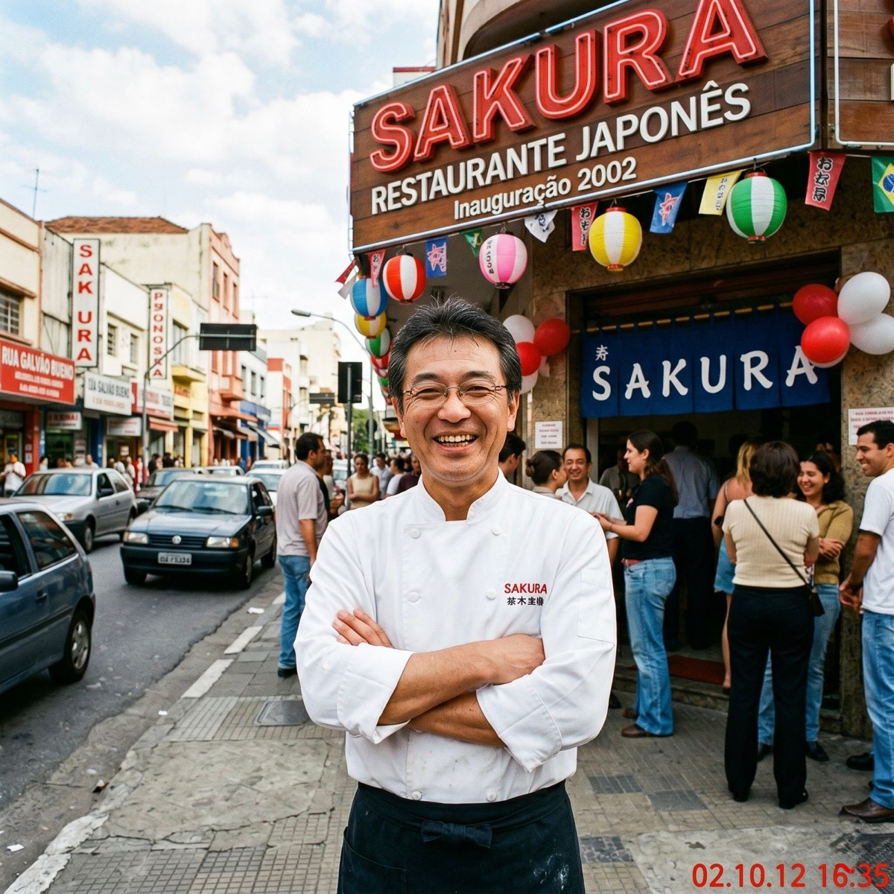

2002
O começo
Abertura no bairro da Liberdade com apenas 6 mesas e o chef Hiroshi.
私たちの物語 · DESDE 2002
Três gerações de tradição japonesa servidas com respeito ao ingrediente brasileiro.

A FILOSOFIA
Fundado em 2002 pelo chef Hiroshi Tanaka, o Sakura nasceu do desejo de trazer a culinária da pequena Osaka para o coração de São Paulo. Nada de adaptações desnecessárias: peixe fresco, arroz lavado sete vezes e respeito ao tempo de cada ingrediente.
Trabalhamos com a filosofia do shun — respeitar o tempo certo de cada ingrediente. Nossos peixes chegam diariamente do CEAGESP e o caldo do ramen leva 18 horas para ficar pronto.
Não somos um restaurante grande. Somos um restaurante de família, e cada cliente que cruza nossa porta é tratado como se fosse um convidado em nossa casa.
LINHA DO TEMPO
Abertura no bairro da Liberdade com apenas 6 mesas e o chef Hiroshi.
Eleito entre os 10 melhores restaurantes japoneses de São Paulo pela Veja Comer & Beber.
Mudança para o endereço atual, com balcão de sushi e três salas privativas.
Bib Gourmand no Guia Michelin São Paulo, a primeira do grupo.